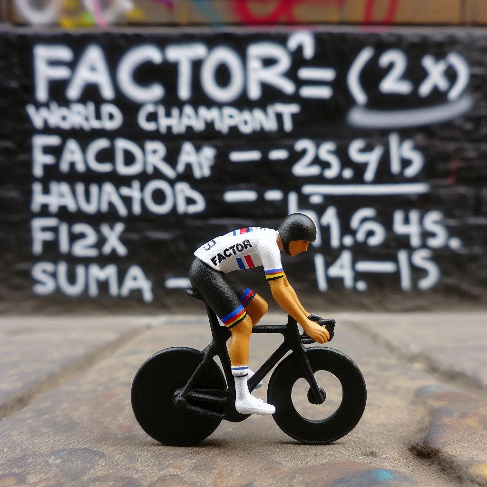
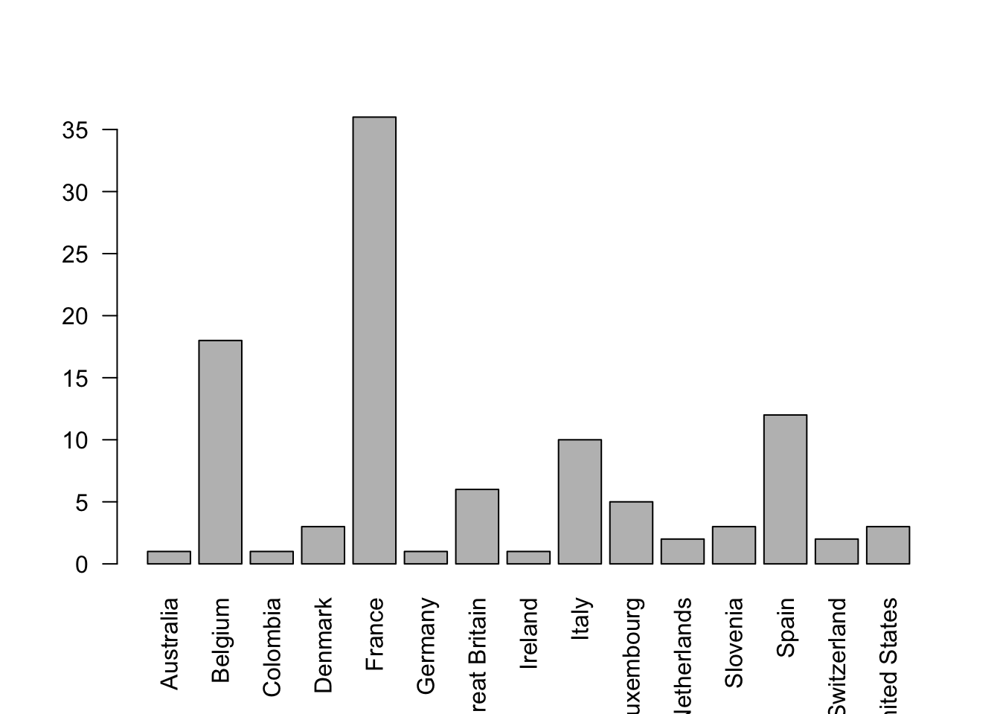
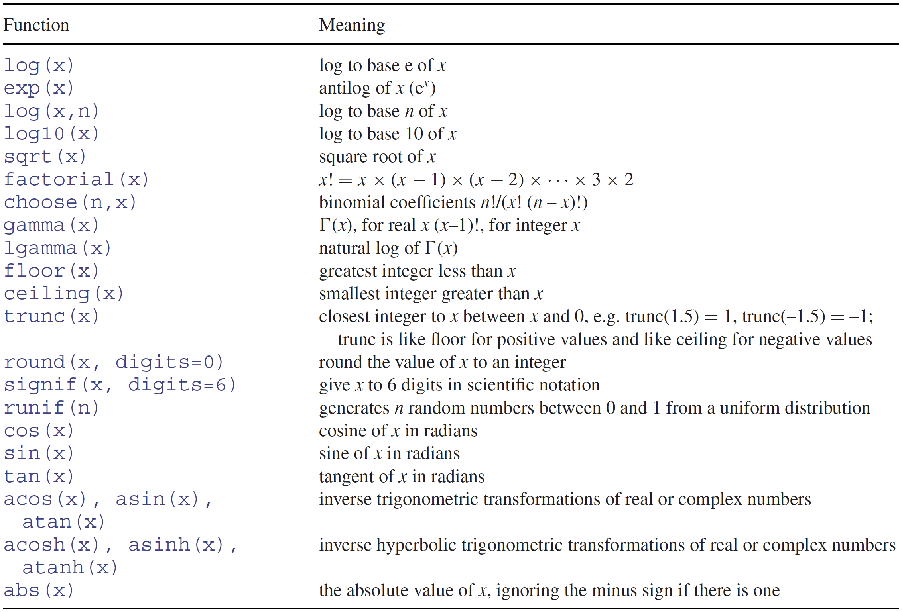
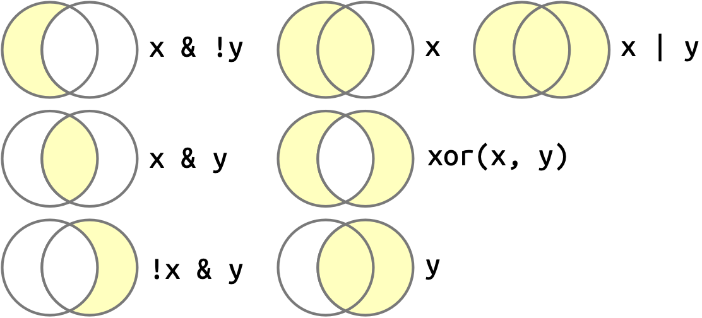
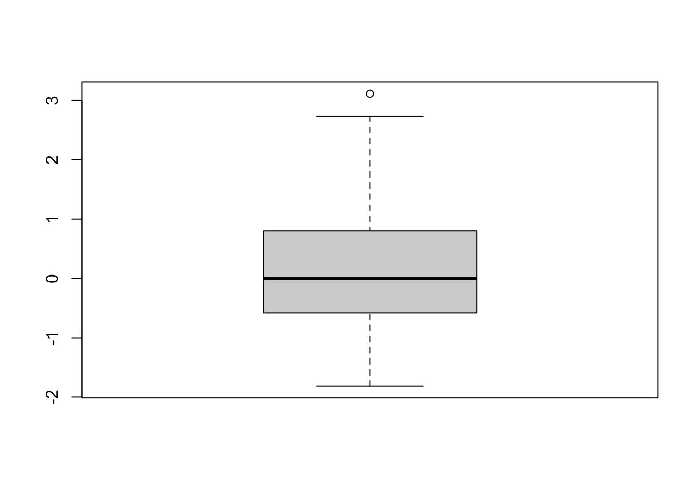
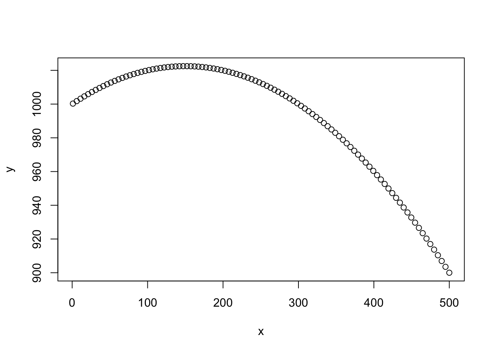
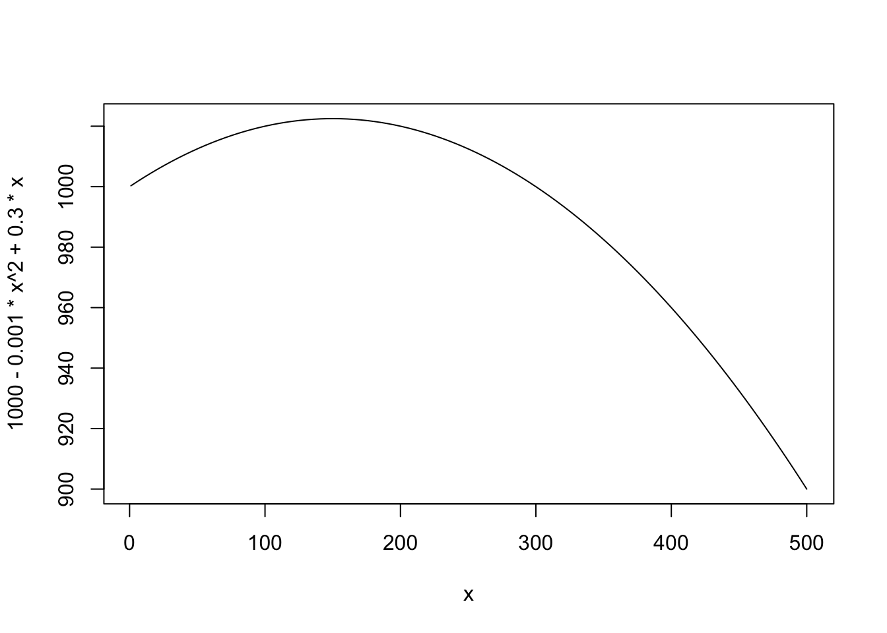

Countries<-c("Romania","Russia","Morocco","Iran","France")
mode(Countries)
#> [1] "character"
Ages<-c(20,25,22,22,49)
mode(Ages)
#> [1] "numeric"6 Vectors
6.1 Introducing vectors
Vectors are the basic units of information in R, and many functions apply to vectors. If you are coming from the “spreadsheet” world (MS Excel or Open Office), where the basic unit is a cell, the change in perspective is quite important: while a cell has a single value (information), a vector contains multiple values.
Vectors, being a combination of values, are created by the combine (or concatenate) function c() or obtained from external sources.
There are two kinds of vectors:
Atomic vectors (which we tend to refer to simply as vectors), which are homogeneous in the sense that they contain only one “type” of data, such as characters or numbers.
Lists, which can have heterogeneous contents.
This chapter is about atomic vectors, we will introduce lists later.
As a first example, see below a character (atomic) vector and a numeric (atomic) vector:
Note that in case you would have a long list to input manually, the scan() function is a little more interactive. Try! (I also have heard there are ways to copy-paste from external sources…(if you fancy less transparent clicking approaches, be curious and find out, for example here: sec-copy-pasting ;-), most of the times anyway we rather read values from readable text files).
6.2 Attributes of vectors
A vector is always characterized by its type and length.
6.2.1 Types
A vector is a combination of values from the same type (or mode). So if you combine data from different types they will be coerced to the less demanding one, i.e. “character” in the following cases:
A<-c(1,"two",3)
A
#> [1] "1" "two" "3"
mode(A)
#> [1] "character"
c(Countries, Ages)
#> [1] "Romania" "Russia" "Morocco" "Iran" "France" "20" "25"
#> [8] "22" "22" "49"
mode(c(Countries, Ages))
#> [1] "character"You can also see from these examples that mode()` gets a vector’s “type”. R vectors have one and only one “mode”, either “numeric”, “character” or “logical” (plus “raw” and “complex”, which we don’t consider here).
You can also use typeof() in case you are interested to know how the data is actually encrypted, which essentially differentiates the “numeric” mode into “integer” and “double”. R vectors have one and only one “typof”, either “integer”, “double”, “character” or “logical”
Coercion to the same type applies to the “typeof” as you can see below
BNum<-c(2,10,99)
typeof(BNum)
#> [1] "double"
mode(BNum)
#> [1] "numeric"
BInt<-c(2L,10L,99L)
typeof(BInt)
#> [1] "integer"
mode(BInt)
#> [1] "numeric"
B<-c(BNum,BInt)
typeof(B)
#> [1] "double"
mode(B)
#> [1] "numeric"In practice, you will rarely use mode() or typeof(), which distinguish well between vectors, but not between most other objects. Instead, you will use the class() function in order to know what kind of data you have and what you can do with it. For most atomic vectors, class() is basically typeof(). The difference is that “class” is not a mutually exclusive property. A vector, or any object, can belong to several classes and thus be used with different functions
class(c(20L,50L,70L))
#> [1] "integer"
class(c(20,50,70))
#> [1] "numeric"
class(Countries)
#> [1] "character"
class(Ages)
#> [1] "numeric"
class(c(Countries,Ages)) #coercion
#> [1] "character"Sometimes, depending on some calculations, you may need to transform the type of data, especially from numeric to character and vice versa. Coercion may apply automatically but not always, so you will need to explicitly transform the data type using “as.a type” or”as.a mode”: as.numeric(), as.character(), which you will use quite often, or as.integer(),as.double(), or as.logical().
A<-c(1,2,3)
B<-c(1L,2L,3L)
C<-c("1","2","3")
A+B
#> [1] 2 4 6
A+C
#> Error in A + C: non-numeric argument to binary operator
A+as.numeric(C)
#> [1] 2 4 6
as.character(A)
#> [1] "1" "2" "3"6.2.2 Length
While a numeric vector of length one is mathematically a scalar, the way you input a scalar in R is as a vector of length 1. A vector can also be empty, i.e. of length 0, in which case its type is unknown, unless you apply one of the above transformations.
X<-3 #equivalent to X<-c(3)
class(X)
#> [1] "numeric"
Y<-c()
class(Y)
#> [1] "NULL"
Y<-as.numeric(c())
class(Y)
#> [1] "numeric"
Y<-as.integer(c())
class(Y)
#> [1] "integer"You get the length of a vector using the function length(), which you will also use quite a lot.`
length(Countries)
#> [1] 5
length(X)
#> [1] 1
length(Y)
#> [1] 0Note that if you manually change the length of an existing vector, this will trim the vector end or extend the vector with empty values.
Z<-c(2, 4, 6, 7 , 10)
length(Z)<-3
Z
#> [1] 2 4 6
length(Z)<-12
Z
#> [1] 2 4 6 NA NA NA NA NA NA NA NA NABesides their class() and length() attributes, vectors (and other objects) can be endowed with a number of other attributes, which you will obtain from attributes(). None of the vectors we used as example so far has additional attributes, but you can define any attribute yourself. See below how we add a “source” attribute to the vector of “Countries” we created earlier and assign a “character string” to it to describe the source. Retrieving a specific attribute is done with the attr(,"Whatever attribute") function.
attributes(Countries)
#> NULL
attr(Countries, "source")<-"MAGEO students input"
attributes(Countries)
#> $source
#> [1] "MAGEO students input"6.3 Factors
Remember from the introduction, that we (in geography and elsewhere) usually consider discrete and continuous data, each type being split into 2 measurement levels:
Discrete: nominal (blue, green) or ordinal (high, low)
Continuous: interval (10°C, 20°C) or ratio (10 apples, 20 apples) (difference being that 20 apples is twice as much as much as 10 apples, but 20°C is not twice as hot as 10°C because zero is not the absolute zero, hence a ratio in this case makes little sense, only differences are sensical).
This vocabulary is not used directly in R:
Continuous (ratio/interval) data is coded as numeric or integer
Discrete (categorical) data (nominal/ordinal) is preferably coded as a factor.
Nominal data can still be in the “character” type, but the idea of a “factor” is that there is only a limited set of characters’ strings that you will find in a vector (e.g. set of countries, set of land uses) and you are able (willing) to enumerate them. For ordinal data, the order is important, hence it gets closer to an integer set than to a character (e.g. education levels: primary, secondary tertiary education), yet you can sum integer data but should not sum ordinal data.

Factors are designed to properly solve the use of discrete/categorical data. It is based on the integer type (in the sense of typeof) on top of which a “level” attribute is added, and potentially whether it is ordered or not. They are fabricated with the as.factor() or factor() functions.
Countries
#> [1] "Romania" "Russia" "Morocco" "Iran" "France"
#> attr(,"source")
#> [1] "MAGEO students input"
typeof(Countries)
#> [1] "character"
Countries_f<-as.factor(Countries)
Countries_f
#> [1] Romania Russia Morocco Iran France
#> Levels: France Iran Morocco Romania Russia
typeof(Countries_f)
#> [1] "integer"
class(Countries_f)
#> [1] "factor"While the categories are displayed with the factor, the levels() function returns those categories as a character vector.
levels(Countries_f)
#> [1] "France" "Iran" "Morocco" "Romania" "Russia"By default the levels in a factor uses the alphabetical order. In many cases however, you will want to at least define the first one, in order to use it as a reference (typically in regression analysis with a categorical explanatory variable) or choose you own order for plotting or other purposes.
6.3.1 Re-defining the reference level
Suppose you want to use “Morocco” as the first, reference level instead of “France”.
The relevel() function re-orders the levels so that the one indicated as “ref” is used first and the others are moved down the series.
Countries_f2<-relevel(Countries_f, ref="Morocco")You could also set the order directly at the time of creating the factor using the “level” argument, using the factor() function, not as.factor(). We used as.factor() before because it is generally quicker, and there is not always a need to adapt the order of levels.
Countries_f3<-factor(Countries, level=c("Morocco","France","Romania", "Iran","Belgium"))Be careful, however, because if you don’t use the complete list of possibilities, the values that are not specified in the levels vector, will simply be ignored and turned into NA’s. In the above example we forgot “Russia” and therefore have now a NA within our vector. Conversely, we have been able to indicate a “Belgium” level, although it was not present. There is no automatic correspondence between the levels of a factor and its set of values. If you want a match, you can drop unused levels using droplevels() but for those characters (e.g. Russia) that were not taken at the moment of creating the factor, it is too late, they remain a NA.
Countries_f4<-droplevels(Countries_f3)
Countries_f4
#> [1] Romania <NA> Morocco Iran France
#> Levels: Morocco France Romania IranSee how the different factors we made so far change the order of the levels and the data when a case is made absent from the list:
To compare one to one, we use to column-binding function cbind() (compare with c()). You also see here that the values of the factors are integers, not characters as for the first vector:
cbind(Countries,Countries_f,Countries_f2,Countries_f3, Countries_f4)
#> Countries Countries_f Countries_f2 Countries_f3 Countries_f4
#> [1,] "Romania" "4" "4" "3" "3"
#> [2,] "Russia" "5" "5" NA NA
#> [3,] "Morocco" "3" "1" "1" "1"
#> [4,] "Iran" "2" "3" "4" "4"
#> [5,] "France" "1" "2" "2" "2"6.3.2 Ordering a factor based on occurrence:
To make a more realistic case, we have scraped the Wikipedia table indicating the Tour de France winners since 1903. See “TourDeFrance” in the data folder for the data and scraping script (from R). The data is in the form of a data.frame and saved as a RDS (an effective way to save R objects onto your disc). See the relevant chapters for data.frame and saving to file later.
There was no Tour de France during World War I and II and no winner from 1999 to 2005 because Lance Armstrong cheated. Hence we have a series of ” - ” in our levels, which are not interesting, and thus not considered when we factor our vector. This doesn’t remove the vector elements but creates several NA’s.
LeTour_df<-readRDS("data/TourDeFrance/LeTour_df.rds")
Winners<-factor(LeTour_df$Country, exclude = "—")
Winners
#> [1] France France France France France
#> [6] France Luxembourg France France Belgium
#> [11] Belgium Belgium <NA> <NA> <NA>
#> [16] <NA> Belgium Belgium Belgium Belgium
#> [21] France Italy Italy Belgium Luxembourg
#> [26] Luxembourg Belgium France France France
#> [31] France France Belgium Belgium France
#> [36] Italy Belgium <NA> <NA> <NA>
#> [41] <NA> <NA> <NA> <NA> France
#> [46] Italy Italy Switzerland Switzerland Italy
#> [51] France France France France France
#> [56] Luxembourg Spain Italy France France
#> [61] France France Italy France France
#> [66] Netherlands Belgium Belgium Belgium Belgium
#> [71] Spain Belgium France Belgium France
#> [76] France France Netherlands France France
#> [81] France France France United States Ireland
#> [86] Spain United States United States Spain Spain
#> [91] Spain Spain Spain Denmark Germany
#> [96] Italy <NA> <NA> <NA> <NA>
#> [101] <NA> <NA> <NA> Spain Spain
#> [106] Spain Spain Luxembourg Australia Great Britain
#> [111] Great Britain Italy Great Britain Great Britain Great Britain
#> [116] Great Britain Colombia Slovenia Slovenia Denmark
#> [121] Denmark Slovenia
#> 15 Levels: Australia Belgium Colombia Denmark France Germany ... United States
length(Winners) #this includes NA's!
#> [1] 122
levels(Winners)
#> [1] "Australia" "Belgium" "Colombia" "Denmark"
#> [5] "France" "Germany" "Great Britain" "Ireland"
#> [9] "Italy" "Luxembourg" "Netherlands" "Slovenia"
#> [13] "Spain" "Switzerland" "United States"Suppose you want to to know and plot how many times each of the 15 countries (who won Le Tour at least once) won.
Frequencies can be observed directly from a basic plot:
plot(Winners,las=2)
Get the victories counts in a vector can be made with table(), which applies to anything (numeric or character) that can be coerced to a factor
table(Winners)
#> Winners
#> Australia Belgium Colombia Denmark France
#> 1 18 1 3 36
#> Germany Great Britain Ireland Italy Luxembourg
#> 1 6 1 10 5
#> Netherlands Slovenia Spain Switzerland United States
#> 2 3 12 2 3Both the plot and counts however follow the order of the levels, which is alphabetical
One possibility to improve the graph is to change the order of the levels based on the count table and redoing the graph
#Vector of levels in a new order
LevelsFrq<-levels(Winners)[order(table(Winners), decreasing = TRUE)]
#note the order function and the square brackets
LevelsFrq
#> [1] "France" "Belgium" "Spain" "Italy"
#> [5] "Great Britain" "Luxembourg" "Denmark" "Slovenia"
#> [9] "United States" "Netherlands" "Switzerland" "Australia"
#> [13] "Colombia" "Germany" "Ireland"
#Use that order when creating the factor from the character vector
WinnersFrq<-factor(Winners, levels = LevelsFrq)
#plot
plot(WinnersFrq,las=2)
6.3.3 Ordered factors
Sometimes you will want to make a categorical data explicitly ordinal for graphical or statistical purpose . For example if you have used a Likert scale within a survey, it can be interesting it is stored as an ordered factor. You can order an already existing factor, using the function ordered(), which adds a logical flag to the factor to indicate it is order (see first example), or at the moment you create the factor using factor() (second example). Once the factor is ordered, the levels are displayed in order and separated by a ” < “. Also a new class,”ordered”, is added to the object.
LikertScale<-c("Strongly disagree", "Disagree","Neither agree nor disagree",
"Agree","Strongly agree") #in the expected order
Responses<-c("Neither agree nor disagree", "Disagree", "Disagree", "Agree", "Agree", "Neither agree nor disagree", "Strongly agree", "Strongly Agree", "Disagree")
Responses_f<-factor(Responses, levels=LikertScale)
Responses_f
#> [1] Neither agree nor disagree Disagree
#> [3] Disagree Agree
#> [5] Agree Neither agree nor disagree
#> [7] Strongly agree <NA>
#> [9] Disagree
#> 5 Levels: Strongly disagree Disagree Neither agree nor disagree ... Strongly agree
Responses_f2<-ordered(Responses_f)
Responses_f2 #Notice that if we don't provide again the levels, it is made from the existing ones, so there is only 4 levels now ("Strongly Disagree" not being answered)
#> [1] Neither agree nor disagree Disagree
#> [3] Disagree Agree
#> [5] Agree Neither agree nor disagree
#> [7] Strongly agree <NA>
#> [9] Disagree
#> Levels: Disagree < Neither agree nor disagree < Agree < Strongly agree
Responses_f3<-factor(Responses, levels=LikertScale, ordered = TRUE)
Responses_f3
#> [1] Neither agree nor disagree Disagree
#> [3] Disagree Agree
#> [5] Agree Neither agree nor disagree
#> [7] Strongly agree <NA>
#> [9] Disagree
#> 5 Levels: Strongly disagree < Disagree < ... < Strongly agree
class(Responses_f3) #see the additional class
#> [1] "ordered" "factor"In the above example you will have noticed a NA, due to some misspelling. This is a good case to remind that categorical data should not necessarily rely on character strings. In geography we often need to treat countries, regions, municipalities whose names can be very complicated, especially in multilingual context. It is good advise to rather use codes for geographical units (e.g. BE351, BE352, BE353, for the NUTS 3 classification of Belgium), land use (e.g. https://land.copernicus.eu/content/corine-land-cover-nomenclature-guidelines/html) and relate them to a corresponding table with proper labels.
It is also true for other types of categories, including Likert scale. An option is to use integer values (or characters for geographical codes) together with a series of labels. You add the labels at the moment of creating the factor:
LikertScale<-c("Strongly disagree", "Disagree","Neither agree nor disagree",
"Agree","Strongly agree")
LikertLevels<-c(1L,2L,3L,4L,5L) #would work as well with numeric c(1,2,3,4,5)
Responses<-c(3L, 2L, 2L, 4L, 4L, 3L, 5L, 5L, 2L)
Responses_f<-factor(Responses, ordered=TRUE, levels=LikertLevels, labels=LikertScale)
Responses_f
#> [1] Neither agree nor disagree Disagree
#> [3] Disagree Agree
#> [5] Agree Neither agree nor disagree
#> [7] Strongly agree Strongly agree
#> [9] Disagree
#> 5 Levels: Strongly disagree < Disagree < ... < Strongly agreeThe result is the same as previously, but you avoid typos when inputing the responses and can also adapt the labels at will, without changing the data itself.
6.4 Operations on vectors
6.4.1 Arithmetic operations and recycling
R is a calculator and perform the arithmetic operations + - * / ^
Two numeric vectors of the same length can be added, multiplied, etc. When vectors of different length are provided, the shorter one is recycled until the end of the longer vector. Usually a vector of length 1 is recycled, thus allowing R to add, divide,etc. a scalar to a vector in the same way as between two vectors (in a “parallel way”). But any shorter vector is also recycled (you get a warning though). See:
X<-c(0,1,2,3,4,5)
X^2
#> [1] 0 1 4 9 16 25
Y<-c(10,9,8,7,6,5)
X+Y
#> [1] 10 10 10 10 10 10
Y/X
#> [1] Inf 9.000000 4.000000 2.333333 1.500000 1.000000
X*c(0,1)
#> [1] 0 1 0 3 0 5You can also apply a series of common mathematical functions to any numeric vector.
a<-c(-2,-1,0,1,2,6,10)
abs(a) #absolute
#> [1] 2 1 0 1 2 6 10
a^(-1) #inverse
#> [1] -0.5000000 -1.0000000 Inf 1.0000000 0.5000000 0.1666667 0.1000000
log(a) #ln or Natural logarithm (or Napierian logarithm)
#> Warning in log(a): NaNs produced
#> [1] NaN NaN -Inf 0.0000000 0.6931472 1.7917595 2.3025851
log10(a) # base 10 logarithm
#> Warning: NaNs produced
#> [1] NaN NaN -Inf 0.0000000 0.3010300 0.7781513 1.0000000
exp(a) #base e exponential
#> [1] 1.353353e-01 3.678794e-01 1.000000e+00 2.718282e+00 7.389056e+00
#> [6] 4.034288e+02 2.202647e+04
10^a #base 10 exponential
#> [1] 1e-02 1e-01 1e+00 1e+01 1e+02 1e+06 1e+10
sqrt(a) #square root
#> Warning in sqrt(a): NaNs produced
#> [1] NaN NaN 0.000000 1.000000 1.414214 2.449490 3.162278See Crawley (2012) p.11 for more examples:

Be careful that these functions must lead to proper results. As you can see from the warnings. “NaN” stands for “Not a Number” and is considered as NA (“not available”). Which is not the case of infinity, which is a numeric
a<-c(-2,-1,0,1,2,6,10)
is.na(NaN)
#> [1] TRUE
is.na(-Inf)
#> [1] FALSE
is.finite(log10(a))
#> Warning: NaNs produced
#> [1] FALSE FALSE FALSE TRUE TRUE TRUE TRUE6.4.2 Euclidean division and rounding
The modulo operation for integers is obtained with %/% to get the integral part of the Euclidean division and %% to get the remainder. This the way you will know an integer is odd or even. The function can also be applied to numeric vectors with decimals.
c(1,3,5,44,444,4444)%/%2
#> [1] 0 1 2 22 222 2222
c(1,3,5,44,444,4444)%%2 #remainder of dividing by 2, thus indicating odd/even
#> [1] 1 1 1 0 0 0
99.99%/%2
#> [1] 49
99.99%%2
#> [1] 1.99For ratio and interval numbers with decimals you sometimes need to get rid of the decimals or display only a part of them Examine the following:
x<-c(33.33, 666.166, 50.5, 49.5)
trunc(x) #compares with as.integer() but does not change the class to integer
#> [1] 33 666 50 49
round(x) #note the rounding of a 5 to the even digit (international standard)
#> [1] 33 666 50 50
round(x, digits=2)
#> [1] 33.33 666.17 50.50 49.50
ceiling(x)
#> [1] 34 667 51 50
floor(x)
#> [1] 33 666 50 49
signif(x, digits = 5)
#> [1] 33.33 666.17 50.50 49.50With geographical data, ceiling() can for example be applied to latitudes and longitudes in order to make grids. A simple example is how to obtain (theoretical) time zones from a set of longitudes.
Let’s take the opportunity to learn about set.seed() and about uniform random number generation runif():
set.seed(101)
Longitudes<-runif(n=10,min=-180, max=180)
Longitudes
#> [1] -46.00858 -164.22307 75.48625 56.76854 -90.05194 -71.98026
#> [7] 30.55199 -59.95183 43.92431 16.49828
ceiling(Longitudes*24/360)
#> [1] -3 -10 6 4 -6 -4 3 -3 3 2
{kind=link}
6.4.3 Logical and Boolean operations
A series of operations return a logical vector, i.e. a vector of Boolean values TRUE and FALSE.
Those operations are >, >=, <, <=, ==, !=
Some examples with numeric and character vectors:
IMPORTANT: Use == for comparison, not =, which is an assignment!
c(1,2,3) < c(2,3,3)
#> [1] TRUE TRUE FALSE
c(1,2,3) >= 3 #see right hand side is recycled and applied "one to one"
#> [1] FALSE FALSE TRUE
"Bernadette, elle est très chouette" == "Bernadette, elle est très chouette"
#> [1] TRUE
"Bernadette, elle est très chouette" != "Mais sa cousine, elle est divine"
#> [1] TRUE
"Julian" >= "Julien" #alphabetical order
#> [1] FALSEBy the way we see here vectors of the logical class:
class("Julian" >= "Julien")
#> [1] "logical"In addition to those comparisons, many functions, especially structured as “is.xxx” return a TRUE or FALSE and are very useful within you data management process. You may make quite some use also of the %in% function, when you have a long vector, to check whether a particular value (or several) is present within a vector.
is.numeric("a")
#> [1] FALSE
is.numeric("2")
#> [1] FALSE
is.numeric(3L)
#> [1] TRUE
is.numeric(FALSE)
#> [1] FALSE
!is.numeric(FALSE) #Note the negation here!
#> [1] TRUE
"urban" %in% c("urban","agriculture","water","forest")
#> [1] TRUE
c("urban","industry") %in% c("urban","agriculture","water","forest")
#> [1] TRUE FALSEBoolean values are usually (always?) coerced to a 1 and 0, in case an arithmetic operation is then demanded.
mean(c(TRUE,FALSE,TRUE,TRUE))
#> [1] 0.75
sum(c(TRUE,FALSE,TRUE,TRUE))
#> [1] 3
3*(c(TRUE,FALSE)+TRUE)
#> [1] 6 3A set of functions then apply specifically to the Boolean values TRUE or FALSE, i.e. to logical vectors.
These logical operators are: !, &, |, xor and typically used to select elements that match 2 or more conditions.
The graphic below, reproduced from R for Data Science (highly recommended!), demonstrate their outcome for 2 sets and an example is provided after creating 2 logical vectors, x and y from the LETTERS character vector.

LETTERS[1:6]
#> [1] "A" "B" "C" "D" "E" "F"
x<-LETTERS[1:6]<"E"
y<-LETTERS[1:6]>"B"
x
#> [1] TRUE TRUE TRUE TRUE FALSE FALSE
y
#> [1] FALSE FALSE TRUE TRUE TRUE TRUE
x & y
#> [1] FALSE FALSE TRUE TRUE FALSE FALSE
x & !y
#> [1] TRUE TRUE FALSE FALSE FALSE FALSE
!x & y
#> [1] FALSE FALSE FALSE FALSE TRUE TRUE
x & y
#> [1] FALSE FALSE TRUE TRUE FALSE FALSE
x | y
#> [1] TRUE TRUE TRUE TRUE TRUE TRUE
xor(x,y)
#> [1] TRUE TRUE FALSE FALSE TRUE TRUE6.5 Vectors’ functions
A number of functions are evaluated over an entire vector (vectorisation is there to avoid loops) and used to describe and understand the distribution of values. They apply mostly to numeric vectors but also to logicals (being 0 or 1 anyway) as well as characters, where possible (based on alphabetical order).
6.5.1 Range, cumulative values, positions and sorting
min(x) |
cummin(x) |
which.min(x) |
sort(x) |
max(x) |
cummax(x) |
which.max(x) |
order(x) |
range(x) |
rank(x) |
||
sum(x) |
cumsum(x) |
Let’s explore some of those for x being a numeric, a logical and character. In class exploration.
It is sometimes difficult to remember differences between sort(x),order(x) and rank(x)
See two examples below
set.seed(101)
x<-round(runif(10,100,200))
x
#> [1] 137 104 171 166 125 130 158 133 162 155
cbind(Original=x,Sorted=sort(x),Rank=rank(x),Order=order(x))
#> Original Sorted Rank Order
#> [1,] 137 104 5 2
#> [2,] 104 125 1 5
#> [3,] 171 130 10 6
#> [4,] 166 133 9 8
#> [5,] 125 137 2 1
#> [6,] 130 155 3 10
#> [7,] 158 158 7 7
#> [8,] 133 162 4 9
#> [9,] 162 166 8 4
#> [10,] 155 171 6 3M<-month.name[1:6]
M
#> [1] "January" "February" "March" "April" "May" "June"
cbind(Months=M,Sorted=sort(M),Rank=rank(M),Order=order(M))
#> Months Sorted Rank Order
#> [1,] "January" "April" "3" "4"
#> [2,] "February" "February" "2" "2"
#> [3,] "March" "January" "5" "1"
#> [4,] "April" "June" "1" "6"
#> [5,] "May" "March" "6" "3"
#> [6,] "June" "May" "4" "5"To those operations, we should add all univariate statistics such as mean(), median(), var(), quantile(), but we leave them aside for now as they are introduced later with univariate statistics and distributions.
Specific to logical vectors, the any() and all() functions are particularly useful in the case you check a very long vector with only very few having a TRUE or a FALSE.
See basic examples:
any(c(TRUE,TRUE,TRUE,FALSE))
#> [1] TRUE
any(c(TRUE,TRUE,TRUE,TRUE))
#> [1] TRUE
all(c(TRUE,TRUE,TRUE,FALSE))
#> [1] FALSEAnd an example where we suppose a random set of values from a normal distribution and we want to check manually whether there is an upper outlier. Typically (as in boxplots) this outlier is calculated as being any value above the 3rd quartile plus 1.5 times the interquartile range.
set.seed(102)
x<-rnorm(100)
q75<-quantile(x, p=0.75)
iqr<-IQR(x)
any(x>(q75+1.5*iqr))
#> [1] TRUE
boxplot(x) #
x[x>(q75+1.5*iqr)] #to identify them
#> [1] 3.114333
set.seed(101) #Check with this seed!6.5.2 Summary
One of the most used function for analysis (if not THE most used) is summary(). We will see its result may change substantially based on the object class it is applied to. Its basic functioning for a simple numeric vector and character vector is:
summary(c(1,2,3,4,NA,6))
#> Min. 1st Qu. Median Mean 3rd Qu. Max. NA's
#> 1.0 2.0 3.0 3.2 4.0 6.0 1
summary(c("A","B","C",NA,NA,"F"))
#> Length Class Mode
#> 6 character character6.5.3 Element-wise functions
Other functions apply to two or more vectors. They need an x and a y vector as input, e.g. cor(x,y). Most of those you will encounter use two vectors of the same length and type, i.e. no recycling, which leads us to the notion of a data frame (see next chapter).
At this time, we show only two simple “parallel” or “element-wise” computations: pmin() and pmax(), which can be useful for example when there is a repeated measure for a given set of individuals. Cases are not rare when you make a new vector (or column in a data frame) based on such element-wise calculations. (Yet you would probably assemble the data into a data frame first and then make a row-wise calculation).
t1<-c(25,35,45,55)
t2<-c(26,36,44,54)
t3<-c(27,34,43,56)
pmin(t1,t2,t3)
#> [1] 25 34 43 54
pmax(t1,t2,t3)
#> [1] 27 36 45 566.6 Indexing and subsetting
Now you have seen that vectors are the key elements in R, you will still want to access its elements individually or parts of it based on positions or conditions
Square brackets I used to get into vector elements by their position (or by their name if named).
You can supply one position but also several positions and ranges. Examine the following:
x<-c(3,1,9,7,8,2,3,6,3,4)
x #all
#> [1] 3 1 9 7 8 2 3 6 3 4
x[4] #4th element
#> [1] 7
x[6:8] #a sequence
#> [1] 2 3 6
x[c(4,6:8)] #both
#> [1] 7 2 3 6
x[-4] #all but the 4th element
#> [1] 3 1 9 8 2 3 6 3 4
x[-length(x)] #all but the last one
#> [1] 3 1 9 7 8 2 3 6 3
x[-((length(x)-1):length(x))] #all but the last two
#> [1] 3 1 9 7 8 2 3 6This is very flexible because you can use any vector representing an index (position) to make a new vector.
x<-c(3,1,9,7,8,2,3,6,3,4)
chicken<-c(10,10,10,4,2,3)
x[chicken]
#> [1] 4 4 4 7 1 9Such a vector can be a logical, then the elements where the logical is TRUE are returned.
x<-c(3,1,9,7,8,2,3,6,3,4)
x>3
#> [1] FALSE FALSE TRUE TRUE TRUE FALSE FALSE TRUE FALSE TRUE
x[x>3]
#> [1] 9 7 8 6 4
x %% 2 == 0
#> [1] FALSE FALSE FALSE FALSE TRUE TRUE FALSE TRUE FALSE TRUE
x[x %% 2 == 0] #even numbers only
#> [1] 8 2 6 4
x[x>mean(x)]
#> [1] 9 7 8 6
x[as.logical(c(0,1))] #?? recyling is in effect here
#> [1] 1 7 2 6 4Possibilities are endless, especially if you think the indexing vector can come from another vector than x.
Vectors are sometimes named, and names the used to retrieve the data:
y<-c(1000,1500,900,1200)
names(y)<-c("UK","BE","LU","FR")
y["LU"]
#> LU
#> 900Last but not least, once selected an element can then be assigned a new value:
z<-c(0,0,0,4,2,3,0)
z
#> [1] 0 0 0 4 2 3 0
z[2]<-5
z
#> [1] 0 5 0 4 2 3 0
z[z==0]<-NA #a very much used use case
z
#> [1] NA 5 NA 4 2 3 NA6.7 Sequences and repetitions
There are many instances where you will need to create a repeated set of values or sequence of values. The functions seq() and rep() are used extensively.
Imagine as a first example you have 5 regions named 2,4,6,8,10 and each of them send a flow of cars to each other, thus building a 5 x 5 matrix =25 records of flows.
regions<-seq(from=2, to=10, by=2)
regions
#> [1] 2 4 6 8 10
origins<-rep(regions, 5)
origins
#> [1] 2 4 6 8 10 2 4 6 8 10 2 4 6 8 10 2 4 6 8 10 2 4 6 8 10
destinations<-rep(regions, each=5)
destinations
#> [1] 2 2 2 2 2 4 4 4 4 4 6 6 6 6 6 8 8 8 8 8 10 10 10 10 10
flows<-paste("from ",origins, " to ", destinations)
flows
#> [1] "from 2 to 2" "from 4 to 2" "from 6 to 2" "from 8 to 2"
#> [5] "from 10 to 2" "from 2 to 4" "from 4 to 4" "from 6 to 4"
#> [9] "from 8 to 4" "from 10 to 4" "from 2 to 6" "from 4 to 6"
#> [13] "from 6 to 6" "from 8 to 6" "from 10 to 6" "from 2 to 8"
#> [17] "from 4 to 8" "from 6 to 8" "from 8 to 8" "from 10 to 8"
#> [21] "from 2 to 10" "from 4 to 10" "from 6 to 10" "from 8 to 10"
#> [25] "from 10 to 10"If you like to give a unique number to identify each flow with a number starting at 100 and don’t calculate that you have 25 of them, seq_along`is your tool:
seq_along(flows)
#> [1] 1 2 3 4 5 6 7 8 9 10 11 12 13 14 15 16 17 18 19 20 21 22 23 24 25
cbind(seq_along(flows),flows)
#> flows
#> [1,] "1" "from 2 to 2"
#> [2,] "2" "from 4 to 2"
#> [3,] "3" "from 6 to 2"
#> [4,] "4" "from 8 to 2"
#> [5,] "5" "from 10 to 2"
#> [6,] "6" "from 2 to 4"
#> [7,] "7" "from 4 to 4"
#> [8,] "8" "from 6 to 4"
#> [9,] "9" "from 8 to 4"
#> [10,] "10" "from 10 to 4"
#> [11,] "11" "from 2 to 6"
#> [12,] "12" "from 4 to 6"
#> [13,] "13" "from 6 to 6"
#> [14,] "14" "from 8 to 6"
#> [15,] "15" "from 10 to 6"
#> [16,] "16" "from 2 to 8"
#> [17,] "17" "from 4 to 8"
#> [18,] "18" "from 6 to 8"
#> [19,] "19" "from 8 to 8"
#> [20,] "20" "from 10 to 8"
#> [21,] "21" "from 2 to 10"
#> [22,] "22" "from 4 to 10"
#> [23,] "23" "from 6 to 10"
#> [24,] "24" "from 8 to 10"
#> [25,] "25" "from 10 to 10"With seq you can also partition a range of values into a given number of intervals without knowing what the value of each interval is. Suppose you have 14 teams to provide water to Marathonians. At which distance are you going to place those teams along the path, knowing you need one at the end and one at the start?
Stands<-seq(0,42195,length=14)And suppose that at every third stand you provide some snacks, not just water. So you repeat the pattern “water,water,food” until the end of the vector of Stands
Snacks<-rep(c(FALSE,FALSE,TRUE), length.out = length(Stands))
Snacks
#> [1] FALSE FALSE TRUE FALSE FALSE TRUE FALSE FALSE TRUE FALSE FALSE TRUE
#> [13] FALSE FALSEYou also use sequences to display some functions you like to understand better, such as a polynomial or quadratic.
x<-seq(from=1, to=500, length = 100) #m from school
y<-1000 - 0.001*x^2 + 0.3*x #house rental value
plot(x=x,y=y)
#although you could use curve() here as well:
curve(1000 - 0.001*x^2 + 0.3*x, from=1, to=500)
Crawley, Michael J. 2012. The R Book. 1st ed. Wiley. https://doi.org/10.1002/9781118448908.